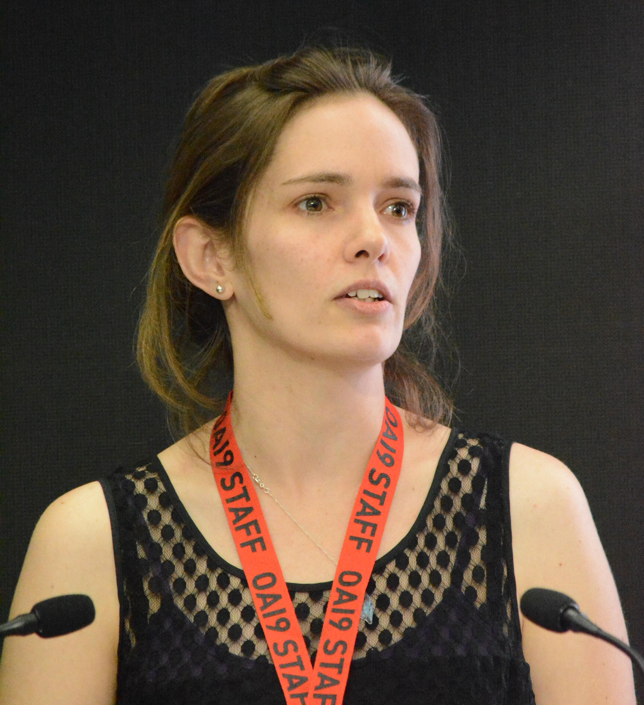

About
Project mission and goals:
This project was born out of our passion for opening up research, making it assessible and reusable by all. We view access to information as a human right and think it should be treated as such. And we believe it will take students and researchers at all levels of academia to bring about culture change. By sharing our work, we can stimulate learning, innovation, and discovery.
Many researchers support the idea of increasing access to research, but worry about the implications for their career of sharing their work. We built this site primarily for researchers, to educate them about all the different ways they can be open and how sharing can be beneficial for their careers. We also aim to provide information and resources for those working in open advocacy. All resources herein all openly licensed and their reuse in encouraged.
Who are we?

Erin McKiernan: Concept development, web development
Erin received her PhD in Physiological Sciences from the
University of Arizona in 2010. She is currently a Professor in the
Department of Physics (Biomedical Physics program) at the National
Autonomous University of Mexico. She is an advocate for open access,
open data, and open science. Find out more about her research,
advocacy work, and experiences with open science
at emckiernan.wordpress.com
. Follow her on Twitter
at @emckiernan13.
(Photo credit: Elena Giglia)
John McKiernan: Artist
John McKiernan is a
retired middle school art teacher and writer. He has been a university
lecturer (Hawaii), an archaeologist (England), and a freelance
illustrator and artist (many places). Currently he provides graphics
and custom equipment design for his wife Maggie’s education
consultancy business, Quality Time.
How are we funded?

Our thanks go to the Shuttleworth Foundation. Their generous flash
grant, awarded to Erin McKiernan, made this project possible.
Thanks also to:
The Right to
Research Coalition (SPARC) for their advising throughout the
development and realization of this project. We encourage people
to check out the excellent resources on
R2RC's website for
students, researchers, and professionals who want to get involved
in open advocacy.